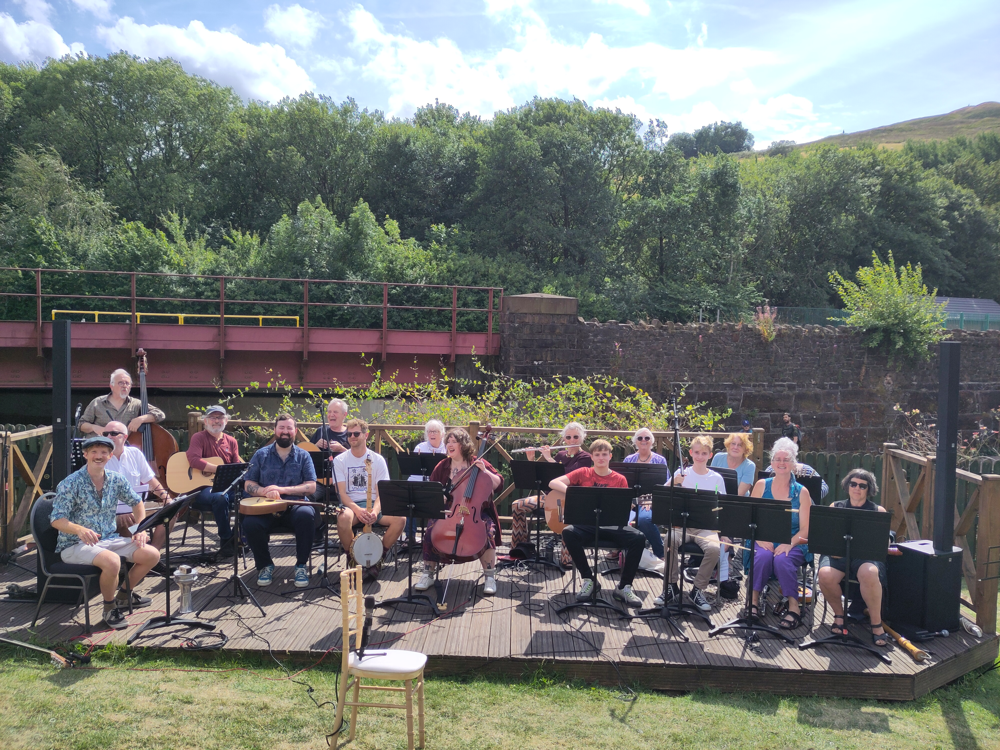

LOCAL FOLK C.I.C. is a not-for-profit community music organisation in Huddersfield. We bring people together through inclusive, low-barrier music-making. For wellbeing, connection and the joy of shared song.

Music belongs to folk. We foster community cohesion, celebrate diverse cultures, and improve wellbeing through music-making that anyone can join — no auditions, no experience, no barriers. We hire only local artists, keeping our carbon footprint low, and we're building a free online library of European folk tunes.
Birkby Community Choir — a free weekly intergenerational choir at Birkby and Fartown Library. Multilingual songs taught by ear, healthy shared snacks, everyone welcome.
European Folk Music Orchestra (EFMO) — a friendly weekly orchestra in Marsden for all abilities and acoustic instruments, playing traditional folk tunes from across Europe.
As a community interest company, every penny goes back into making music accessible. Donations help keep sessions free and pay local artists fairly.
♥ Donate / Fundraising pageFree · Weekly · Everyone welcome. no auditions, no fees, no experience needed.
An intergenerational choir for the whole community. Families, isolated adults, older people, and Birkby's many communities and languages (Punjabi, Urdu, Polish, Arabic, Kurdish and more). Songs are taught by ear in many languages, so nobody needs to read music. Healthy snacks are shared at every session.
Just turn up or drop us a message and we'll make sure you get a warm welcome.
Low-cost, inclusive, and democratic. This is a folk orchestra for every ability and every acoustic instrument.
EFMO meets weekly in Marsden to play traditional folk music from across Europe. All skill levels and all acoustic instruments are welcome. Tunes are chosen and arranged democratically — this is your orchestra as much as anyone's.
Keep an eye on our events listing below for the next session.
Questions, choir sign-ups, event bookings or press enquiries — send us a message and Sam will get back to you.
(Example layout — in WordPress you'd add events as simple posts and they'd appear here automatically.)
| Date | Event | Where |
|---|---|---|
| Every Monday, 3–5pm | Birkby Community Choir session | Birkby Library |
| Weekly (see socials) | EFMO rehearsal | Marsden |
| TBC | Community performance | Venue TBC |